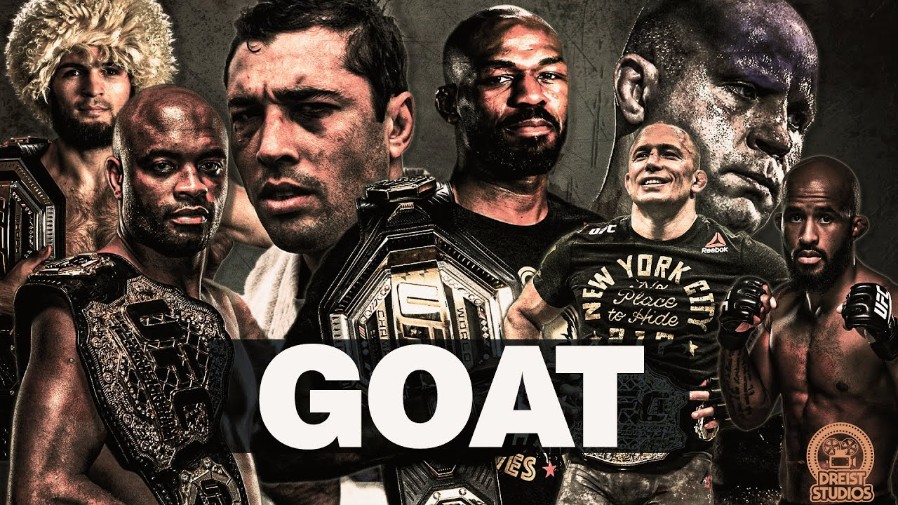

GOAT Conversation
There is constant talk among MMA fans about who is the "greatest of all time." In reality, there isn't any one single answer. Weighing things like dominance, technical pioneering,
title victories and winning streaks means that there will always and forever be multiple viable answers to any questions about the MMA GOAT.
Fighters who some consider the GOAT
- Georges "Rush" St-Pierre
- Jon "Bones" Jones
- Anderson "The Spider" Silva
- Demetrious "Mighty Mouse" johnson
- Jose Aldo "Junior"
- Khabib "The Eagle" Nurmagomedov
Fighters with a shot at GOAT status
There are many active fighters who have the talent and time to take a run at GOAT status. Alexander Volkanovski may well be the UFCs most underrated champion right now. However, could "The Great" go onto become the greatest 145lber of all time? It definitely seems possible. Another fighter with a shot at possibly de throwning the king of welterwights, St-Pierre, is Kamaru Usman who has been every bit as dominant as GSP was over the welterweight division.